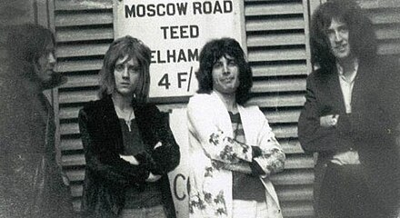
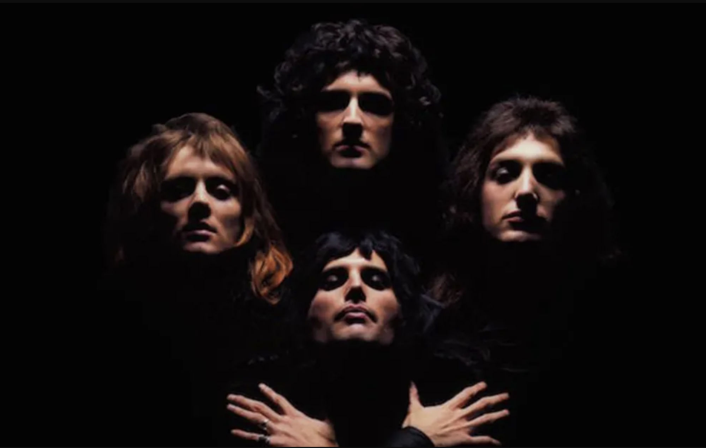
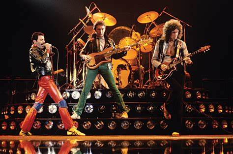
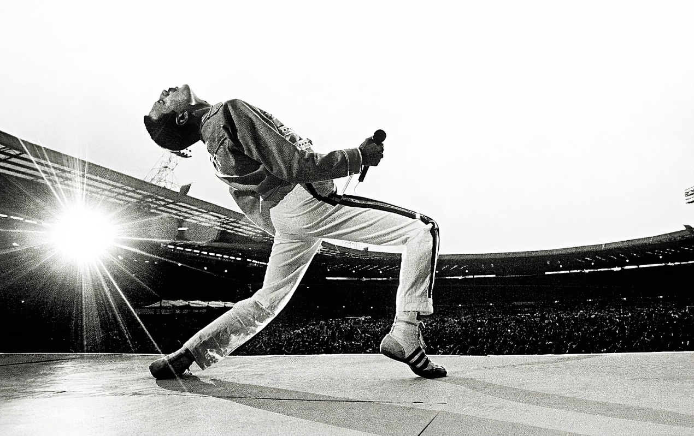
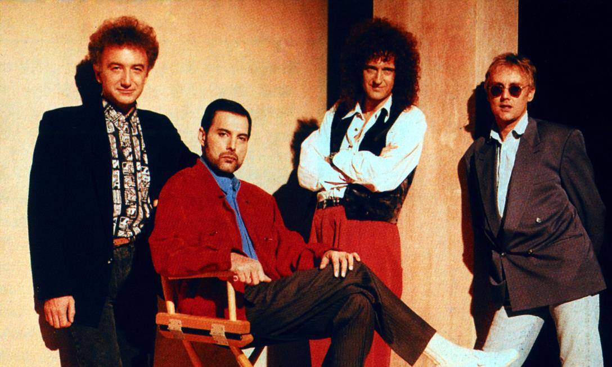
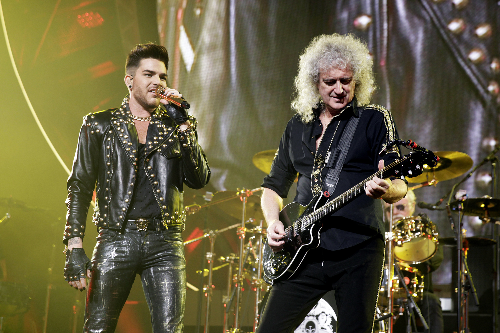
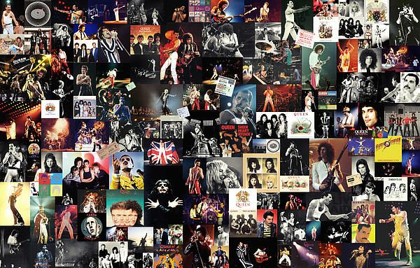
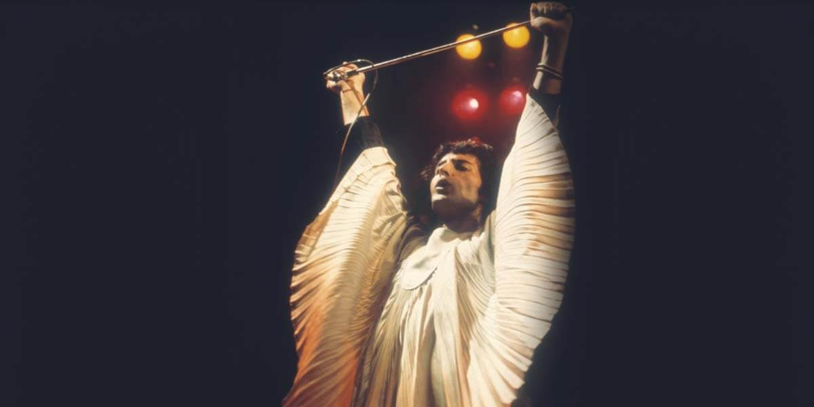

Queen's origins trace back to 1970 in London. Brian May and Roger Taylor were members of the band Smile with bassist Tim Staffell.
When Staffell left, May and Taylor recruited Freddie Mercury, who had previously been performing under the name Farrokh Bulsara.
Mercury suggested the name Queen, and the group was completed by John Deacon on bass, finalizing the iconic lineup.
The band started performing in London clubs and quickly developed their signature sound,
combining elements of progressive rock, pop, and opera. Mercury also designed the band's iconic logo,
which features the zodiac signs of the band members.
Wikipedia contributors. (2024, November 25). History of Queen. Wikipedia.

Queen's self-titled debut album, Queen (1973), was released to mixed reviews but showcased their potential.
Their second album, Queen II (1974), demonstrated a more refined sound, blending hard rock with baroque and operatic elements.
The third album, Sheer Heart Attack (1974), saw a breakthrough with the hit single "Killer Queen," which introduced Queen's unique blend of hard rock and pop sensibilities.
In 1975, the release of A Night at the Opera marked the band's artistic and commercial breakthrough.
The album featured the now-legendary "Bohemian Rhapsody," a groundbreaking six-minute song that combined rock, opera, and ballad elements,
which became an international hit. This period established Queen as one of the most innovative bands of the '70s.
Wikipedia contributors. (2024, November 25). History of Queen. Wikipedia.

Queen's popularity skyrocketed with albums like A Day at the Races (1976) and News of the World (1977).
"We Will Rock You" and "We Are the Champions", from News of the World, became two of the band's most iconic anthems and remain synonymous with sports events worldwide.
In 1978, the band released Jazz, which included hits like "Don't Stop Me Now" and "Bicycle Race." During his period,
Queen continued to refine their music, experimenting with disco, progressive rock, and glam influences.
Their live shows grew more elaborate, with Freddie Mercury developing his now-iconic, larger-than-life stage persona.
Wikipedia contributors. (2024, November 25). History of Queen. Wikipedia.

In the early '80s, Queen's music took a more radio-friendly turn with The Game (1980), which featured the funky "Another One Bites the Dust" and the rockabilly-inspired "Crazy Little Thing Called Love."
These hits helped Queen continue to chart highly in the US, where their popularity grew significantly.
During the mid-'80s, tensions within the band began to emerge as Freddie Mercury's solo endeavors,
including his 1985 album Mr. Bad Guy, began to take more of his focus. Despite this, Queen remained a top-tier act, and in 1985,
they delivered an iconic performance at Live Aid. Their set at the charity concert is often considered one of the greatest in rock history,
with Freddie Mercury's charisma and vocal prowess on full display.
Wikipedia contributors. (2024, November 25). History of Queen. Wikipedia.

By the late '80s, Freddie Mercury,s health began to deteriorate due to AIDS. Despite this, Queen continued to release music,
including their 1989 album The Miracle and 1991's Innuendo. "The Show Must Go On," from Innuendo,
became one of the band's most poignant tracks, as it reflected Freddie's struggle with his illness.
Mercury passed away on November 24, 1991, just a few months after Innuendo was released.
His death was a devastating blow to the music world, and Queen's future seemed uncertain.
However, the surviving members of the band (May, Taylor, and Deacon) expressed their desire to continue making music in his honor.
Wikipedia contributors. (2024, November 25). History of Queen. Wikipedia.

After Freddie Mercury's passing, the surviving members of Queen went on a period of reflection. In 1995, they released Made in Heaven,
an album that contained tracks recorded before and after Freddie's death. The album was well-received, and Queen's legacy was solidified.
In the 2000s, Queen + Paul Rodgers (the former Bad Company frontman) and later Queen + Adam Lambert began touring together, keeping the band's music alive for new generations.
The collaboration with Adam Lambert, which started in 2009, became a major success. The band's concerts, often billed as Queen + Adam Lambert, have attracted large audiences worldwide, though John Deacon retired from active performing in 1997.
The 2018 biographical film Bohemian Rhapsody renewed Queen's global popularity, with the movie focusing on their rise to fame and Freddie Mercury's life.
The film was a commercial and critical success, winning several awards, including Best Actor for Rami Malek's portrayal of Freddie.
Wikipedia contributors. (2024, November 25). History of Queen. Wikipedia.

Today, Queen's impact on music and popular culture is immeasurable. The band's fusion of hard rock, progressive rock, opera,
and pop created a unique sound that remains influential. Their hits like "We Are the Champions," "Somebody to Love," and "Bohemian Rhapsody"
continue to be celebrated, and their music is featured in movies, sports events, and commercials.
The band's iconic live performances, especially Mercury's stage presence, set a new standard for rock shows,
influencing countless musicians and bands. Queen's legacy continues through their music and the enduring popularity of Queen + Adam Lambert,
ensuring that their influence will be felt for generations to come.
Wikipedia contributors. (2024, November 25). History of Queen. Wikipedia.

Queen's music and legacy endure as one of the most important and influential in rock history.
Their ability to blend genres, create unforgettable anthems, and perform with unmatched energy has secured their place as one of the greatest bands of all time.
The band's influence can still be seen in artists across genres, from rock to pop, and their songs remain anthems for millions around the world.
Wikipedia contributors. (2024, November 25). History of Queen. Wikipedia.
